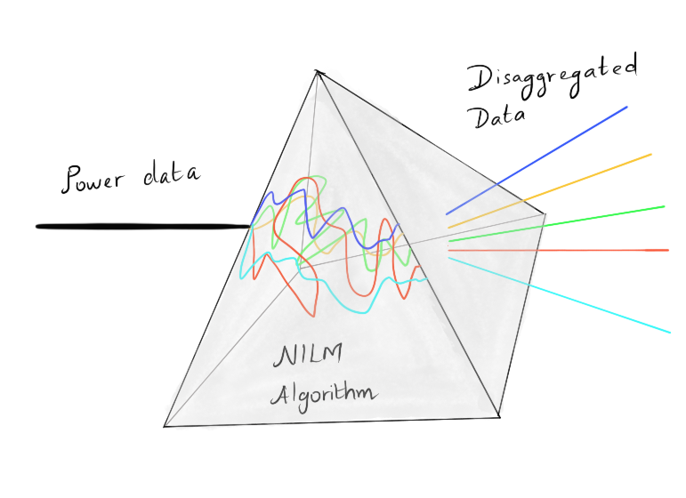

Context
I spent just over three years at the research arm of Tata Consultancy Services (then called the Innovation Labs) from 2011 to 2014 (before I took a sabbatical for my doctoral studies and eventually moved out). The experience of working on futuristic technology problems in an industrial environment was interesting. I had the opportunity to witness an idea grow from its budding stage to eventual proof of concept and further adoption.
One research problem that occupied most of my time during this stint was Source Separation. The idea underlying the problem stems from the need to analyse the multiple sources that give rise to a multitude of effects on a single (or a small number of) measurements. One application problem that came out of it (which was in its infancy during that time, and is at various stages of implementation today): Non-intrusive load monitoring (NILM).
In this article, I will discuss my experiences working on this problem.
An intro
A couple of years or so back, EDF, the French electric giant, with whom I have a contract for my house’s electricity, updated their app/interface with a possible option to follow our daily consumption profile. This followed the installation of the smart electric meters, known as Linky, in our apartment. While this did not provide me with insights that I did not already have, there was something more on offer. The application also allowed me to dive further into the categories of my consumption based on different groupings: 1. Refrigeration 1. Water heating 1. Electric heater 1. Cooking 1. Infotainment and Computers.
The recent screen capture of this looks something like this (I redacted the amount and my address):

The refrigerator consumed 9% of the total electricity consumption. And one can get a vague idea already about how much the other categories consumed. Given the furore over data privacy, I had to unlock these features by deliberately giving EDF the rights handle my data.
By now, one would have got the idea of what NILM means:
To disaggregate or distinguish between different electrical appliances and their power consumption using a single power meter data.
Or, one could view NILM algorithms acting like a prism

When I first started to work on the problem of NILM, the academic papers were all interested in a sampling rate of once in 1 second. And right in line, the open datasets were also developed to the same tune. For example, the REDD dataset from (the then) MIT team with Zico Kolter at the helm provided data in that sampling rate range. Subsequent open data sets followed suit with similar ones. And some, like the popular dataset from Ubicomp Lab at the University of Washington on Kaggle (that featured in the Belkin competition), had an even higher frequency of operation.
However, the Linky smart meters installed in my apartment collects data once in 15 minutes and maps more closely to my ventures just before I started my PhD. In this work, we explored the use of AMI type data for NILM. AMI stands for Advanced Metering Infrastructure, the type of metering companies were hoping to install in households (sampling the cumulated power consumption every 15 minutes or so). This is in contrast with the high-frequency data over which most of the academic research work were based on. While challenging, that seemed unrealistic and so we wrote this paper summarizing our then-ongoing efforts.
Springer Link behind paywall or perhaps more useful would be the link to Pre-print
Client Project
In our initial work, we focused on using the open datasets (for lack of data from our side). Things changed due to a pilot project to implement NILM in the Netherlands for a startup client. The unfortunate thing was we started without any data to work with and limited assumptions. The IT team built a data handling infrastructure awaiting installation of sensors, but developing a machine learning algorithm without data was a cruel joke (we weren’t even sure on what would be the sampling rate of data because our client was still discussing with their potential clients about it).
So we decided to do what today is terms as Transfer Learning which (as per Wikipedia) > focuses on storing knowledge gained while solving one problem and applying it to a different but related problem.
without actually knowing what the term transfer learning. We collected some statistics/pattern about the characteristics of various appliances from the open datasets available. Then we created a pseudo database for different appliances that could then be used for training when the data arrived.
An extra problem that plagued the initial efforts were in obtaining appliance level signatures. The pilot was in households where the wiring of the appliances was well integrated into the walls and it was difficult to put plugs to tap them. This led to an extra aspect of gamification introduced to label data. The process was as follows:
- Using the transfer learning-based database, our NILM algorithm will provide detection of appliances.
- The inhabitants of the households will get notifications at the end of the day on these detections through a mobile App.
- The user labels the detection (correct or wrong) based on their own knowledge.
- The NILM algorithm trains a model specific to each household based on this labelling.
Several aspects of the above process were in flux. For instance, we were exploring different algorithms that can perform NILM (note that back in 2013, this area was fresh and had limited success) or the gamification aspects were not clear (how much to trust the feedback, etc.). But with all the limitations, a pilot went forward and looked good. But everything also came to an abrupt end due to financial constraints at the startup.
During the same period, several other startups, notably in the US were working on the NILM problem. Some of them are still active: Bidgely, Opower, and more (check this 2012 entry on Oliver Parson’s blog on companies working on NILM). Several other companies came in and disappeared as it always happens. I worked with one of them.
NILM Techniques Explored
It is not surprising that we tried several techniques to realize NILM. Further, unlike academic freedom, we had to work with a limited set of assumptions and hence the need to use customized techniques (which were of course not published). But here are some techniques that were published: * Bayesian Inference IEEE link behind paywall or Preprint * Factor Graphs IEEE link behind paywall or Preprint
Apart from the different techniques, we also presented a paper on the approach to use a mix of transfer learning and simulation to generate labelled data over which NILM algorithms could be tested: ACM link behind paywall or Preprint
I will discuss these techniques and those we explored in more details sometime in the future.
Beyond household disaggregation
Our explorations for the application of NILM went beyond the household energy disaggregation pilot project with the Dutch startup. The following were the other problems that were at explored: * Cost-savings for a large building * A large office building of an enterprise also contained a cafeteria serving hundreds of diners. The power to these were supplied from a single transformer. This means that the electricity tarrif paid by the enterprise was corresponding to a commercial establishment (the cafeteria) and not the workplace. The latter was much cheaper. We gave a proposal of how one could attempt to use NILM and obtain an estimation of the two entities and save cost in the electricity bill paid. * Condition monitoring of appliances or industrial equipments * Today, the central aspect of Industry 4.0 is the condition monitoring of equipment to perform predictive maintenance, so much so that even Amazon is into it. A couple of proposals were floated in that direction back in 2013-14. * Disaggregation of load versus generation (with rooftop solar installation) * When the rooftop solar installations became popular, different countries took different approaches to their integration with the grid. In some countries, there were no restrictions on how an individual household decides to integrate solar panels with their own usage or to connect back to the grid. We floated ideas on how to use NILM on the smart meter data to estimate generation capacity in a household. * A related application was whether we can use a single smart meter to identify defects in a host of solar PV panels (say on rooftops or a farm). * Activity monitoring * A more contentious application of NILM was on activity monitoring. A patent was filed in this application towards the fag end of my stay in the lab.
These are the applications that I remember from the top of my head.
A few words before the end
Recently, I bumped into the NILM workshop for 2020 organized online and came across their papers and the YouTube live videos.
I would try to spend some more time into these papers and posters and synthesize some thoughts for a future post where I would also like to discuss the NILMTK python module, which I had been itching to try.
It would be disingenious not to acknowledge the contributions of co-workers/supervisors in the above endeavours, though one can see the presence of M Girish Chandra, Goutam YG prominently in all the publications.